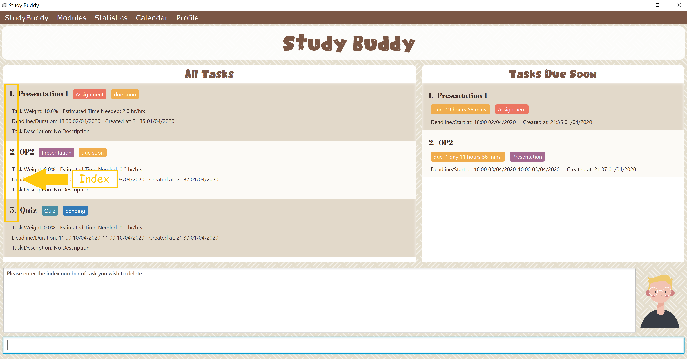

By: Team Drag&Drop Since: Jan 2020
1. Introduction
Study Buddy is a desktop application which is designed for students who wish to manege their module related tasks. More importantly, Study Buddy is optimized for those who prefer to work with a Command Line Interface (CLI) while still having the benefits of a Graphical User Interface (GUI).
You will never have to remember long, wordy commands to use your command line interface, since Study Buddy provides an interactive way of communication, which not only helps to prevent typos, but also makes the application much easier to use!
If you can type fast, Study Buddy can get your module management done faster than traditional GUI apps.
Currently, Study Buddy support both Windows and Mac systems. If you are interested, please jump to the Section 2, “Quick Start” to get started.
Hope you enjoy : )
2. Quick Start
-
Study Buddy relies on a particular computer environment to operate correctly, thus to enjoy it, you need to have
Java 11or above installed in your computer. -
When your computer is ready, you can download the latest
studybuddy.jarto get your Study Buddy. -
To better manage your tasks, you may copy the file to the folder you want to use as the home folder for the Study Buddy.
-
Last, double-click the file to start the app and the dashboard should appear in a few seconds.
 Figure 1. Study Buddy Dashboard
Figure 1. Study Buddy Dashboard -
The box with the words
Enter your command here…is where you can key in your desired command and click Enter to execute. -
To view a list of available command, you can key in
helpand click Enter. A more detailed description of our features is available in Section 3, “Features” of this document.
|
Study Buddy will analyze your input and reply accordingly. Hope you enjoy! |
3. Features
3.1. Basic features
Command Format
-
Words in
UPPER_CASEare the parameters to be supplied by the user e.g. inadd n/NAME,NAMEis a parameter which can be used asadd n/John Doe. -
S and U stand for Study Buddy and User respectively.
-
When a line is preceded by S, it implies that it is a reply displayed by Study Buddy.
-
When a line is preceded by U, it implies that it is a value that must be entered by the user.
-
[enter] indicates hitting the enter key on your keyboard.
-
[exits] indicates that application has closed
| These features utilize interactive command prompt. (described in section Section 3.5, “Interactive Command Prompt” ) |
3.1.1. Help :
Format:
U- help
S- list of commands
Description:
-
This function displays a list of commands that you can use.
-
It also provides a link to this document, (our user guide) for your convenience.
Example:
U- help
S- Here is the list of available commands:
1. add
2. delete
3. edit
4. bye
5. sort
6. find
7. done
8. delete duplicates
9. sort
10. archive
11. help
12. list
13. clear
14. create mods
User Guide: https://ay1920s2-cs2103t-w16-3.github.io/main/UserGuide.html
3.1.2. Add:
Format:
U- add
S- prompt for name
U- NAME
S- list of possible task types, prompt for type index
U- TYPE INDEX
S- prompt for deadline
U- DEADINE
S- done!
Description:
-
This function allows you to add a task to your list of tasks.
-
You can assign a name, type, and deadline to your tasks.
| The application does not allow you to enter a deadline that has already passed. It must be a time in the future. |
| The application allows for addition of duplicate tasks. It will however confirm with you if you are sure you want to add a duplicate. |
Example:
U- add
S- Please enter the task name.
U- Lab 1 submission
S- The name of task is set to: Lab 1 submission.
Please choose the task type:
1. Assignment
2. Quiz
3. Presentation
4. Meeting
5. Exam
6. Others
U- 1
S- The type of task is set to: Assignment.
Please enter the deadline with format: HH:mm dd/MM/yyyy
U- 18:00 23/06/2020
S- The date and time is set to: 18:00 23/06/2020
Press enter again to add the task:
Lab 1 submission Assignment 18:00 23/06/2020
U- [enter]
S- Task added successfully!
3.1.3. Delete
This commands deletes a task from the existing list, using the index provided by you.
Example:
After having added a task, you realise that there has been a change and you do not need to do that task anymore.
Study Buddy provides you an option to delete that task from the list!
To delete:
-
Initiate the command using keyword
delete -
Study Buddy should respond with:
Figure 2. Reponse to 'delete' -
Type the index of the task you want to delete.
Figure 3. Reponse to delete index 1 -
Press
enteragain to confirm -
Task has been deleted! You will notice that the task at the index you selected has disappeared from the list of tasks.
Figure 4. Updated list (without deleted task)
3.1.4. Delete duplicates
This commands deletes all duplicated tasks in the list.
Example:
After having added a duplicated task, you realise that there is no more need for this duplicate task. Yet you do not want to scroll through the entire list to delete it.
Study Buddy provides you an option to delete all your duplicate tasks from the list!
To delete duplicates:
-
Initiate the command using keyword
delete duplicates -
Study Buddy should respond with:
Figure 5. Reponse to 'delete duplicates' -
Press
enteragain to confirm -
Duplicate tasks have been deleted! You will notice that only one copy (most recent) of each task will be left in the list.
Figure 6. Updated list (without duplicate tasks)
3.1.5. Archive/ Unarchive
This commands stores the specified task into a separate list.
Example:
After a hard days work, you completed some tasks. You don’t want them in your to-do list anymore, but you don’t want to delete them; some of the information in the task card could still be useful.
You can always store them in an archive!
To archive:
-
Initiate the command using keyword
archive -
Study Buddy should respond with:
Figure 7. Study Buddy’s reponse to 'archive' -
Type the index of the task you want to archive.
Figure 8. Study Buddy’s reponse to task index -
Press
enteragain to confirm -
Task has been archived! You can view all archived task under the
StudyBuddy→Archived Taskstab.Figure 9. View archived tasks
3.1.6. Find
Finds tasks whose names contain any of the given keywords.
Format: find KEYWORD [MORE_KEYWORDS]
Examples:
-
find John
ReturnsjohnandJohn Doe -
find Betsy Tim John
Returns any task having namesBetsy,Tim, orJohn
| To navigate back to the always on display list of tasks, you can use the Section 3.1.7, “List” function. |
3.1.7. List
Format:
U- list
S- done!
Description
-
This function allows you to view a list of all your tasks.
Example:
U- list
S- Here is the complete list of tasks:
3.1.8. Refresh
This commands refreshes the list of tasks due soon as well as status tags.
| Due soon list shows tasks due within the next week. Details are in Section 3.3, “Due Soon Tasks” |
| Status tags include information on the tasks' status. Details are in Section 3.4, “Status Tags” |
Example:
Say you left Study Buddy open overnight because you fell asleep studying. When you wake up, you notice that the time left for the deadline on the due soon tasks is not accurate.
You can refresh them!
To refresh:
-
Say this is what Study Buddy looks like.
Figure 10. Current state (needs to be refreshed)Suppose you notice that the task "Submit UG" is not due "now" anymore because some time has past since the deadline.
-
Initiate the refresh command using keyword
refresh -
Study Buddy should respond with:
Figure 11. Reponse to 'refresh' -
Press
enteragain to confirm -
Tasks have been refreshed!
Figure 12. View refreshed Study BuddyYou will notice that the overdue task has now moved out of the due soon list and has the updated status tag "overdue".
3.1.9. Edit
Edits an existing task in the study buddy.
Format: edit INDEX [n/NAME] [d/DATE] [e/DETAILS] [l/LABEL] [t/TAG]…
Examples:
-
edit 1 d/2020-05-19 e/tough assignmentand
Edits the date and details of the 1st task to be `2020-05-19tough assignmentrespectively. -
edit 2 n/Database project t/
Edits the name of the 2nd task to beDatabase projectand clears all existing tags.
3.1.10. Clear
This commands clears all data in the Study Buddy.
| Be careful with this command! It will remove any data you may have entered into the Study Buddy and you cannot retrieve it. |
Example:
Say you have finished a semester and would like to clear everything in your Study Buddy and start over.
You can always clear everything!
To clear:
-
Initiate the command using keyword
clear -
Study Buddy should respond with:
Figure 13. Reponse to 'clear'
You can enter quit if you wish to go back!
|
-
Press
enteragain to confirm -
Study Buddy has been cleared completely!
Figure 14. View empty Study Buddy
3.1.11. Saving the data
Description:
Study Buddy data is saved in the hard disk automatically after any command that changes the data.
There is no need to save manually!
3.1.12. Exit
This command exits from Study Buddy.
| All your data will be saved and reloaded when you open the application later! You can find details about this in Section 3.1.11, “Saving the data” |
Example:
After working all day, you would like to close the application and have a good night’s sleep.
You can always exit the application!
To exit:
-
Initiate the command using keyword
bye -
Study Buddy should respond with:
Figure 15. Reponse to 'bye' -
Type 'yes' if you want to exit and anything else if you do not wish to exit.
 Figure 16. Reponse to any command other than 'yes'
Figure 16. Reponse to any command other than 'yes'In response to yes, the application should simply close.
3.2. DashBoard
Your menu where all the things you want to see from the app is right here. By default, it shows the following:
-
The impending task from the task list, sorted by timing
-
A chart of the amount of time you spend on each of your modules
-
Existing stopwatches that are already running
3.3. Due Soon Tasks
The due soon task list is always on display in your application.
It provides the following functionality:
-
It displays your tasks that are due within the next week. (uses deadline)
-
It automatically updates when you make changes to your main list.
-
It displays a tag with the time left to the deadline.
-
It provides a Section 3.1.8, “Refresh” function that allows you to refresh time/state of this list if needed.
3.6. Statistics
On the Statistics page, your usage statistics are displayed. You can use it to see how you can improve your time management and productivity. These include:
-
Number of tasks completed this week
-
Number of deadlines met this week
-
Number of deadlines missed this week
-
-
Time spent on work this week
-
Longest streak of deadlines met
3.7. Timers
The timer feature comprises several other features that manage time. Students can use it to plan their schedule, taking into account the various quizzes, assignments and deadlines they have. Features like that include:
-
An alarm that notifies you when a deadline is approaching
-
A stopwatch, which you can use to time how long you spent on the task
3.8. Calendar
The calendar feature allows you to visualise your schedule by displaying the number of task you have for the month. This allows students to plan their time efficiently.
The calendar feature can be toggled by clicking Calendar → Display

-
PreviousandNextbuttons can be used to navigate through previous and next months respectively.Homebutton brings you to the current date, which is in a blue border. -
Clicking on any date will show you all tasks for that day. Keep in mind that the Index shown in this panel cannot be used for other commands.
3.9. UI
You can customize the appearance of your app. You can change the colour of the background, as well as for different modules
3.10. Profile
The profile page shows the detail information of the user, such as:
-
Personal information, such as name, gender, year of study
-
Goal CAP
-
Task history
-
etc
3.11. Piechart
The application provides a summary of the information below using different piechart. These include:
-
The breakdown grades for each assessment in the same module.
-
The number of different types of assessment in the same module.
-
The number of different tasks in different modules.
-
The time cost for each module, thus the user can better manage their time.
4. FAQ
Q: How do I transfer my data to another Computer?
A: Install the app in the other computer and overwrite the empty data file it creates with the file that contains the data of your previous Study Buddy folder.
5. Command Summary
-
Add
add n/NAME p/PHONE_NUMBER e/EMAIL a/ADDRESS [t/TAG]…
e.g.add n/James Ho p/22224444 e/jamesho@example.com a/123, Clementi Rd, 1234665 t/friend t/colleague -
Clear :
clear -
Delete :
delete INDEX
e.g.delete 3 -
Edit :
edit INDEX [n/NAME] [p/PHONE_NUMBER] [e/EMAIL] [a/ADDRESS] [t/TAG]…
e.g.edit 2 n/James Lee e/jameslee@example.com -
Find :
find KEYWORD [MORE_KEYWORDS]
e.g.find James Jake -
List :
list -
Help :
help